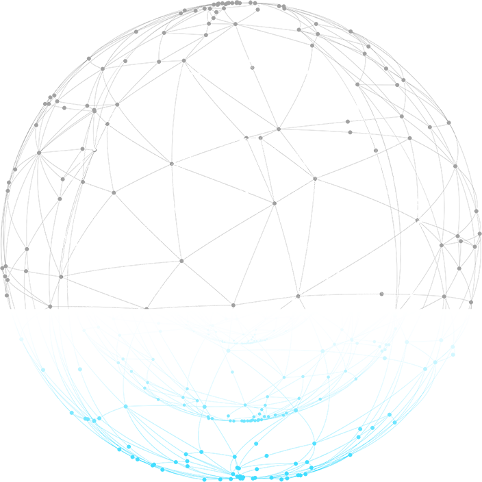
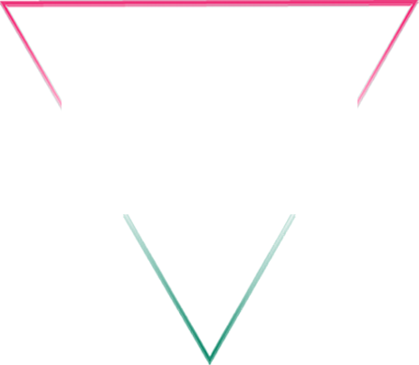
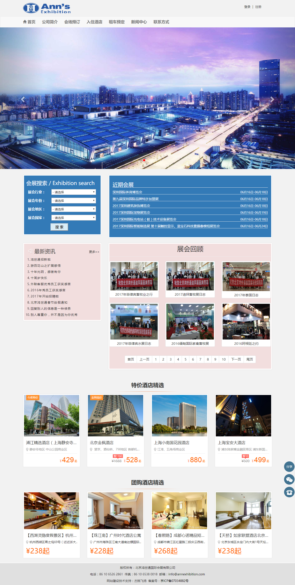
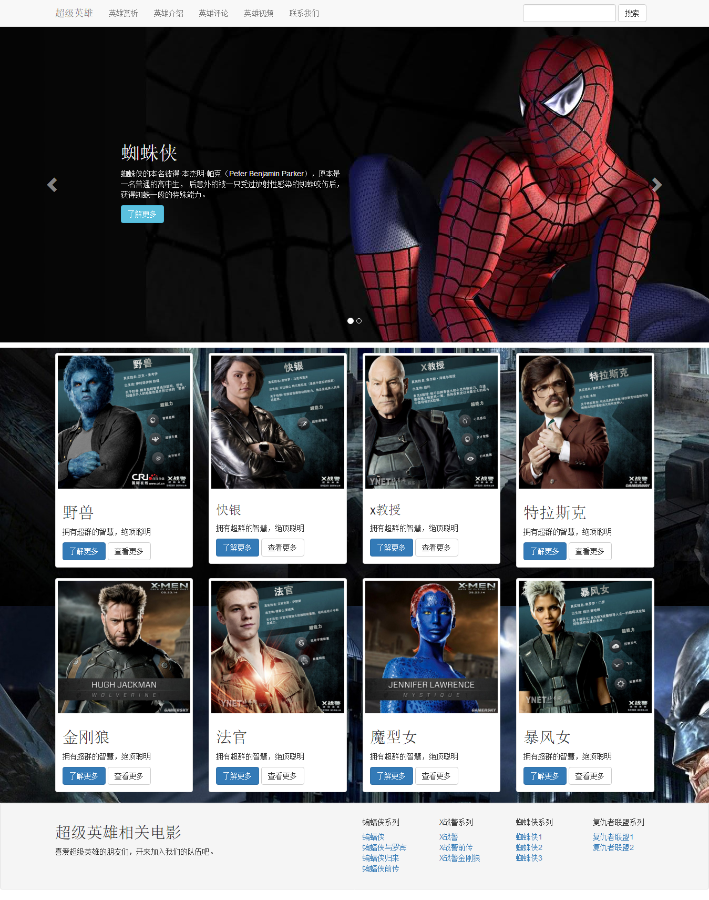

盛邦升华双选会


泊头职业学院
计算机网络技术专业校企合作项目
IT人才双选会
2017年12月23日（周六）
诚挚邀请
尊敬的用人单位：
您好！
非常感谢对我院就业工作的大力支持!为拓宽毕业生就业渠道，为毕业生和用人单位搭建人才输送平台，我院将举办面向IT行业校园双选会， 特此邀请用人单位前来我院招聘英才，并建立长期而稳定的好友合作关系。
会议地址
学院简介
泊头职业学院是一所富有光荣革命传统的历史名校 ， 其前身为1925年9月建校 ，有沧州黄埔之誉的河北泊头师范学校 。 我院是经教育局批准的省属公办全日制普通高等院校， 专科层次 ，具有单招和统招的招生资格和计划。
盛邦升华成立于2004年， 是一家发展多年IT技术咨询和技术培训的企业； 开设课程贴近企业项目技术， 师资具有多年企业项目经验。通过泊头职业学院与盛邦升华深度合作 ，已经培养优秀毕业生并成功就业千余人。
会议流程
08:45-09:00
09:00-10:00
10:00-11:30
11:30-11:40
11:40-13:00
13:00-15:00
15:00-15:10
签到
学院、计算机系介绍
双选环节
合影留恋
午餐、筛选简历
复试面试
结果
作品展示

作品展示

联系我们